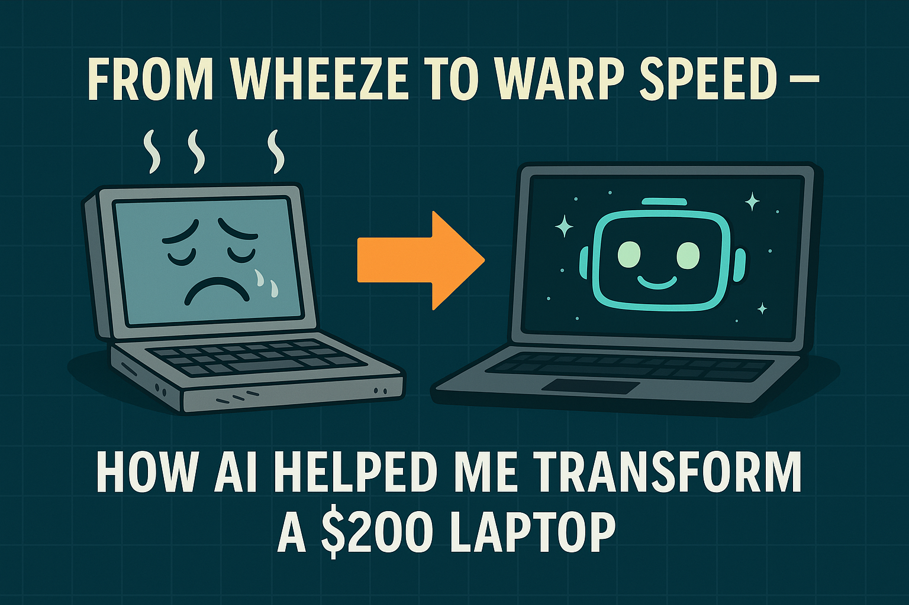

Kyle Mohney
Kyle Mohney
Kyle Mohney
Kyle Mohney

What happens when you pair AI with curiosity, adaptability, and a $200 Walmart laptop?
You turn a wheezing frustration machine into a coding, design, and light gaming powerhouse — in just one afternoon.
This isn’t a story about being a systems engineer. It’s about being resourceful, asking questions, coordinating AI like a team of specialists, and finding solutions that most people would assume are out of reach.
In this article, you’ll learn:
How I diagnosed and optimized a laptop stuck at 100% CPU and RAM at idle
The step-by-step process of auditing registries, services, and startup programs with AI copilots
How I used custom PowerShell scripts to surgically disable bloat while preserving essential features
The before-and-after results (from unusable to fully functional in one hour)
Why this isn’t about coding expertise — it’s about AI coordination and adaptability
When I unboxed my “budget” laptop, I quickly realized it was worse than useless:
Most people would’ve returned it. Instead, I decided to treat it like a project.
My background isn’t in IT. I’ve never worked as a sysadmin.
My only hardware experience? Assembling gaming desktops.
My only PowerShell experience? Basic commands while experimenting with Python and AI bots.
But I knew one thing: AI copilots can fill in technical gaps if you coordinate them correctly. I wasn’t aiming for perfection on paper — I was aiming for a laptop that could run my real-world projects without catching fire.
With AI copilots at my side, I went deeper than I ever had into system internals:
I wasn’t guessing. Every step was logged, explained, and validated.
Here’s where AI coordination paid off.
Together, we built custom PowerShell scripts that carefully disabled bloatware, telemetry, and unnecessary startup apps — while protecting the essentials.
The whole process took about one hour.
By that afternoon, the laptop was no longer a frustration machine — it was back to coding Quinn’s Quest 2.0.
As a bonus? It even ran Skyrim. Terrible FPS, yes, but the fact it could run at all was proof the system had been revived.
The transformation was night and day:
This wasn’t a miracle. It was applied methodology.
I didn’t do this because I’m a systems engineer. I did it because I’m a project manager who knows how to use AI as a force multiplier.
The takeaway is simple:
AI doesn’t replace human adaptability — it amplifies it.
If I can take a $200 Walmart laptop from broken to functional in one afternoon, imagine what I can do with enterprise-level resources.